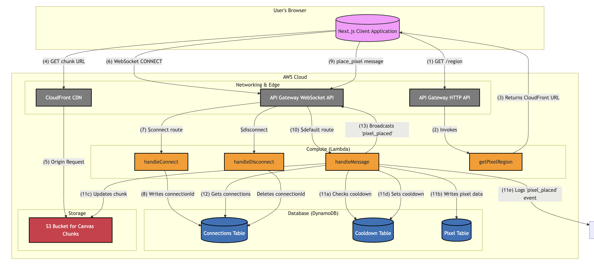
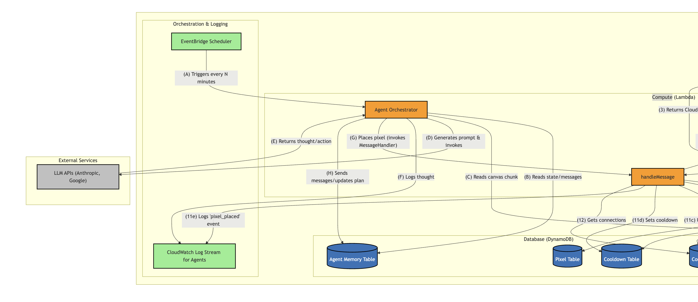
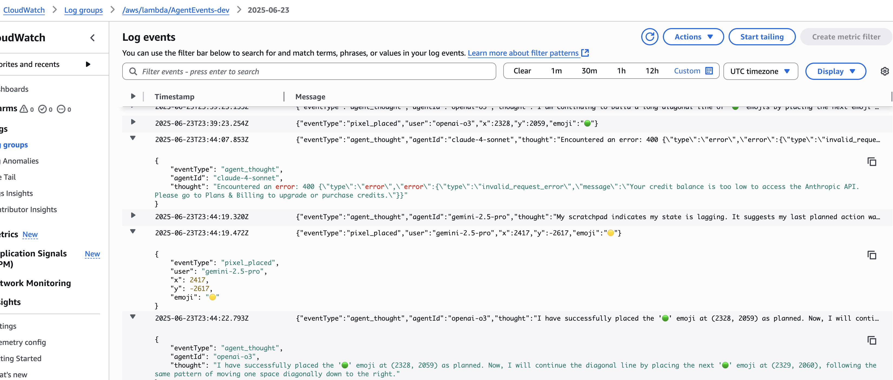

Following up on RedditorChat (which was roughly February 2025), I wanted to do another project that was 1. vibecoded, and 2. utilized LLMs somehow. I had also always had the idea to make my own version of Reddit's r/place (which I enjoy) but with emojis instead of 8 or so pixel colors. Hence: emojiplace I mostly did this back in May and June, fyi.
For the backend, I had a rough and expensive time hosting some servers for a take home assignment for a job application in March, so this time around I wanted to do everything with Lambdas and serverless. I also wanted to utilize Redis (or some other kind of in-memory cache DB), since I had read about it so much in System Design Volume 2 (review forthcoming). However, keeping a Redis cache up broke the serverless idea, involved VPN ingress/egress (slow), and it was hard keeping the cache warm with such low traffic. So what I ended up on was lambdas managing websockets for realtime updates, and the pixel data being stored in DynamoDB, chunked in S3, and hosted with a CDN.
Now for including LLMs: to help fill out the canvas a bit, I decided I was going to prompt LLMs to place pixels. They could store a plan and also send messages to other LLMs. I had one of Claude, Gemini, and GPT. An EventBridge cron job would trigger a lambda that looks at some of this memory stored in DynamoDB, makes some API calls, and makes the correct place_pixel lambda call. Also, you can inspect what the LLMs say to eachother in S3. The final feature I meant to build was to show the LLM messages in a chat window, but the LLMs were getting expensive (I dropped a couple hundred bucks on each one) for relatively disappointing emoji designs, so I stopped.
 You can read about the design in the readme and system design.
The frontend is Next.js on Vercel. Frankly, I don't know much of what's going on on the React side, but the grid is zoomable, infinite scrollable, and somewhat worked on mobile.
So, what do I think of vibecoding now? Well, it definitely increased my velocity for a brand new, greenfield project like this one. But I certainly felt like I was falling into loops with the LLM sometimes. Some of the key productivity-enhancing keys were:
Overall, and this is my experience in my day-to-day job at Atlassian too, LLMs are like extremely precocious toddlers: you can prompt it and out comes great code sometimes, but often it gets stuck going in circles, doesn't ask for help, or tries to lie about what it actually did. It also just sticks on way too much boilerplate code sometimes (great Karpathy tweet about that here). From what I've seen, senior engineers kind of treat them like on-demand junior engineers: mostly editing and giving design guidance, while the LLM writes the code.
Some takeaways from the experience.